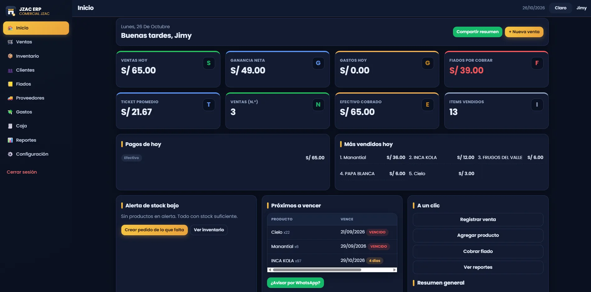

Sistema de ventas para bodega: qué debe tener y cómo elegir
Si tu bodega todavía se maneja con cuaderno, calculadora y memoria, no estás solo: es la realidad de miles de negocios en Oxapampa y en todo el Perú. El problema aparece cuando las cuentas no cuadran, un fiado se pierde o no sabes qué producto te está dando ganancia.
Un sistema de ventas para bodega no tiene que ser complicado ni caro. Esta guía te explica qué funciones necesitas de verdad, qué errores evitar y cómo comparar opciones sin pagar de más.
Qué es un sistema de ventas para bodega
Es un programa que registra tus ventas, descuenta el stock, controla la caja y guarda el historial de tus clientes. En la práctica reemplaza el cuaderno por una pantalla simple que hace las cuentas por ti y te deja consultar todo en segundos.
No necesitas una computadora potente ni un técnico permanente. Los sistemas modernos funcionan desde el navegador del celular y se guardan en la pantalla de inicio como si fueran una aplicación.
Las 7 funciones que sí necesitas
1. Ventas rápidas
En hora punta no puedes perder tiempo buscando productos. El sistema debe permitir buscar por nombre, escanear un código o tocar el producto favorito y cobrar en pocos pasos. Si tu cliente espera más de lo normal, el sistema estorba.
2. Control de inventario automático
Cada venta debe descontar el stock. Así sabes qué se está agotando y evitas vender lo que no tienes. Lo ideal es que puedas agregar productos por unidad o por peso, algo clave en abarrotes, frutas y verduras.
3. Caja y arqueo
Debes poder abrir caja con un monto inicial, registrar ingresos y gastos, y cerrar el día comparando lo que debería haber con lo que hay. Sin esto, los faltantes se vuelven un misterio.
4. Control de fiados
El fiado es parte de la vida de una bodega, pero necesita orden: a quién le fiaste, cuánto debe, desde cuándo y qué abonos ha hecho. Un buen sistema te muestra la deuda total por cliente y te ayuda a recordar los cobros.
5. Comprobantes internos
Una boleta o nota de venta interna da confianza y evita discusiones. Si necesitas facturación electrónica SUNAT, confirma que el proveedor la ofrezca y a qué costo adicional.
6. Funcionar sin internet
En muchos pueblos y zonas del país el internet se cae o es lento. Un sistema que dependa 100% de la conexión te deja sin vender. Verifica que pueda operar sin conexión y guardar los datos en tu equipo.
7. Respaldos
Tu información es lo más valioso. El sistema debe permitir exportar un respaldo para guardarlo en otro lugar o pasarlo a un equipo nuevo. Desconfía de programas que no te dejan sacar tus datos.
Prueba clave: antes de pagar, pide usar el sistema con tus propios productos durante unos días. Si en ese tiempo no te ahorra tiempo, no es para ti.

Errores comunes al elegir
- Pagar mensualidades sin usarlo. Muchos negocios contratan un sistema "completo" y terminan usando solo la caja. Paga por lo que realmente vas a usar.
- Comprar por presión. El vendedor te muestra 40 funciones, pero tu día a día necesita 7. Pide una prueba y decide con calma.
- No revisar el soporte. Cuando algo falla necesitas a alguien que responda rápido, no un correo que demora días.
- Ignorar los respaldos. Si el celular se malogra y no tienes copia, pierdes años de historial.
- Elegir solo por precio. Lo barato que no funciona sale caro: tiempo perdido, ventas mal registradas y desconfianza.
¿Cuánto cuesta en Perú?
Los sistemas por suscripción suelen costar entre S/ 60 y S/ 150 al mes según los módulos. En un año hablamos de S/ 720 a S/ 1,800, y si dejas de pagar, dejas de usarlo.
Otra opción es el pago único. JZAC ERP cuesta S/ 390 e incluye la licencia para 2 equipos, soporte y actualizaciones por 6 meses. No hay mensualidad: el sistema sigue funcionando aunque decidas no renovar el soporte.
Haz la cuenta: si tu sistema mensual cuesta S/ 90 y lo usas 3 años, pagas más de S/ 3,200. Con un pago único de S/ 390 recuperas la inversión en menos de 5 meses.
Checklist antes de comprar
- ¿Puedo probarlo con mis propios productos?
- ¿Funciona sin internet?
- ¿Controla stock, caja y fiados?
- ¿Puedo exportar mis datos?
- ¿Cuántos equipos incluye la licencia?
- ¿El soporte responde por WhatsApp?
- ¿Hay mensualidades o pagos escondidos?
- ¿Qué pasa si cambio de celular?
Cómo funciona JZAC ERP
JZAC ERP nació en Oxapampa para bodegas y minimarkets reales. Registra ventas en segundos, descuenta stock, controla la caja y lleva los fiados por cliente. Funciona sin internet, se abre en el celular y se paga una sola vez.
Puedes ver el sistema en acción en la demostración interactiva, revisar el precio y la prueba gratis, o leer la guía de cómo controlar los fiados de tu bodega.
Pruébalo 7 días gratis
Sin tarjeta. Instalación y soporte directo por WhatsApp.
Preguntas frecuentes
¿Cuánto cuesta un sistema de ventas para bodega en Perú?
Depende del proveedor. Los sistemas por suscripción suelen costar entre S/ 60 y S/ 150 al mes. JZAC ERP se paga una sola vez: S/ 390, sin mensualidades, con 7 días de prueba gratis.
¿Necesito internet para usar el sistema?
No. JZAC ERP funciona sin conexión una vez abierto: puedes vender y registrar todo aunque se caiga el internet. Los datos se guardan en tu propio equipo.
¿Puedo usar el sistema en el celular y en la computadora?
Sí. Se abre desde el navegador en celular, tablet o computadora, y puedes guardarlo en la pantalla de inicio como una app. La licencia cubre 2 equipos.
¿Qué pasa con mis datos si cambio de celular?
Puedes exportar un respaldo e importarlo en el equipo nuevo. Además, liberamos el equipo anterior para que actives la licencia otra vez sin costo.